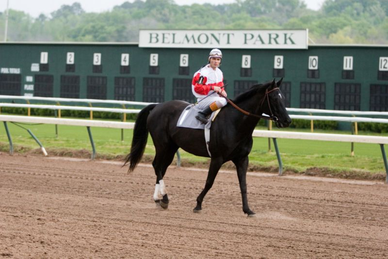
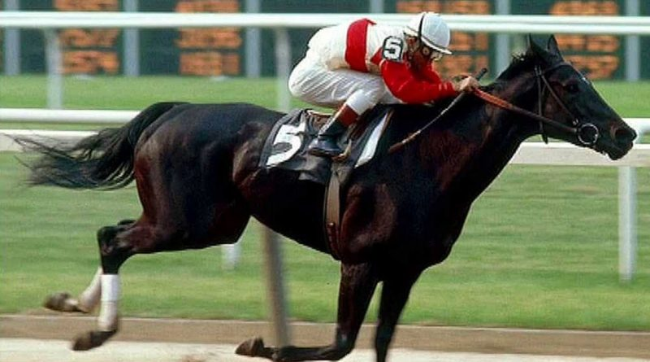

Kvíz

1. Mikor születt Ruffian?
1972. április 17-én
1989. október 23.-án.
1968. július 14.-én.
2. A tíz versenyéből mennyit sikerült megynernie?
Ötöt siekrült megnyernie.
Csak egyszer veszített.
Soha nem veszített, haláláig veretlen maradt.
3. Melyik évben nyerte el az év kancacsikója címet?
1974-ben kapta meg ezt a címet.
1978-ban nyerte el a címet.
1976-ban nyerte el a címet.

4. Mi volt az utolsó versenye?
Az Osztrák Derby.
1975-ben egy összehasonlító futam Foolish Pleasure-rel.
1975-ben a kancák triple Crown-ja.
5. Miben és mikor halt meg Ruffian?
1985 október 9-én altatták el, miután betegsége nem javult.
1975-ben halt meg kólika miatt.
1975-ben a élete utolsó versenyén törte el a lábát, az orvosok nem tudták megmenteni.